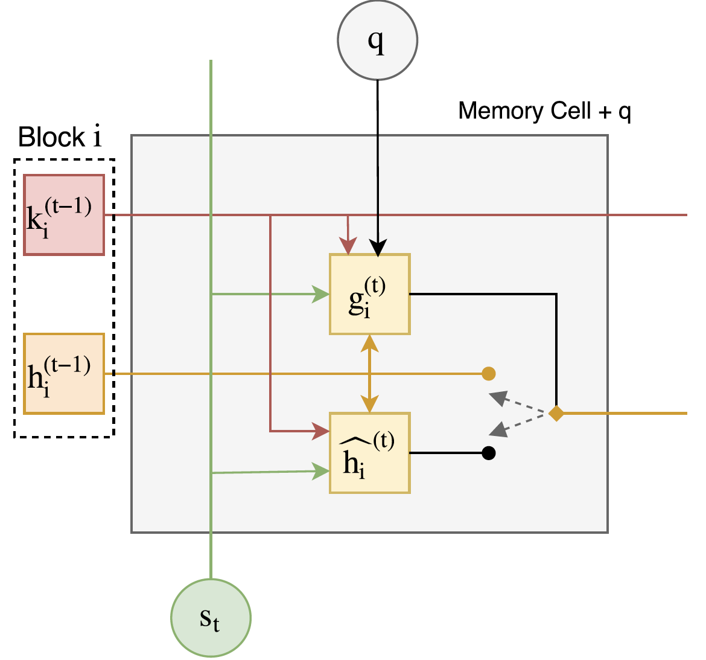
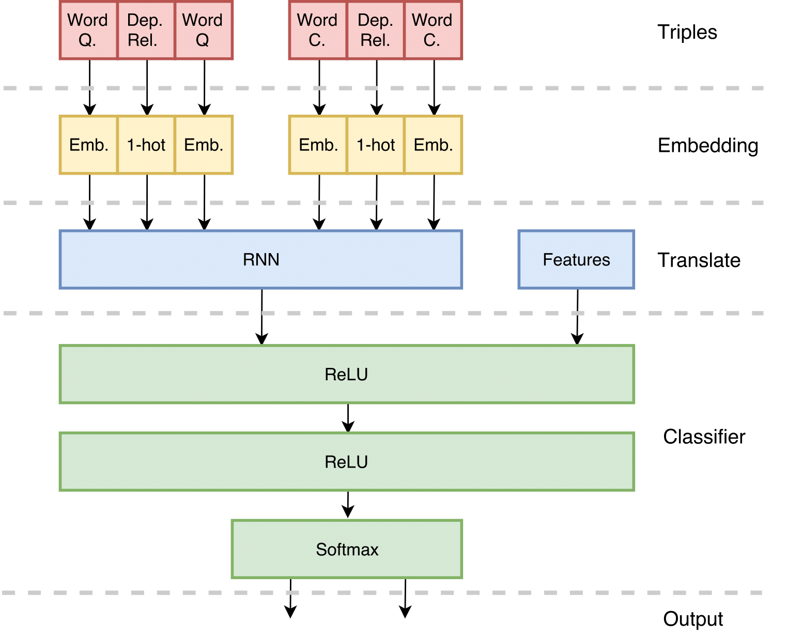
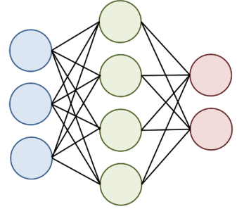

About
I was born in Perugia, where I received my Bachelor’s Degree in Computer Science at the University of Perugia. After that, I moved to Hong Kong, where I obtained my first Master Degree in Advanced Information Systems with honours at Hong Kong Baptist University. There, I also worked as a Research Assistant at the Center of Health Informatics in the Computer Science Department. Afterwards, I obtained my second Master Degree in Computer Science at the University of Pisa. Currently. I am currently a Research Assistant at the Human Language Technology Center of Hong Kong University of Science and Technology. I love Algorithms, Artificial Intelligence, and playing the Ukulele.
Recent News
Dec 2017
- Working very hard on some new projects. Got 2 papers accepted at NL4AI and DSTC6 respectively. Happy New Year.
Aug 2017
- A very interesting article for verifying properties of deep neural networks (or providing counter-examples). The article is available at arXiv:1702.01135, and a short YouTube video is also summarizing the article. #improveNNcredibility
- Back to Hong Kong finally. At the same time, I have prepared, and submitted, a short paper derived from my master thesis (a preprinting is available at arXiv:1707.07922).
Jul 2017
- Finally graduated!!! After 1 year and half, I have obtained my MSc degree in Computer Science at Pisa University, finishing with 110/110 First Honor Class (Cum Laude).
Jun 2017
- Working on my thesis, a very busy month. Btw, an implementation of the Question Dependent Recurrent Entity Network for Question Answering is available in my github.
May 2017
- I have presented Big Data Analytics (Apache Spark) and Data Visualization using Matplotlib and Seaborn Library for the Advanced Programming Class. Have a look at the Jupiter Notbook of the class.
Mar 2017
- I will be the TA of Advanced Programming course for the M.Sc. in Computer Science at UniPi.
Feb 2017
- A new cover picture van gogh style [FULL IMAGE]. Generated using Neural-style and an Nvidia K-80, very cool.
- A new semester at UniPi is starting. I am going to follow: Algorithms for Bio-informatics, and Computational Neuroscience.
- We arrived 8th at SemEval 2017, with our ThReeRNN model. The final score was quite good.
{kind=link}
Education
University of Pisa
M.Sc. Degree, Computer Science • 2015 – 2017
Final grade: 110/110 with First Honor Class (Cum Laude).
Hong Kong Baptist University
M.Sc. Degree, Advanced Information Systems • 2014 – 2015
Msc Fellowship awards, Scholarship in both semesters, and awarded as the best student of the MSc 2014-2015. Final GPA: 3.86/4.
University of Perugia
B.Sc. Degree, Computer Science • 2011 – 2014
Final grade: 110/110 with First Honor Class (Cum Laude).
Publication
- Wu, CS., Madotto, A., Winata, GI., Fung, P. (2017). End-to-End Recurrent Entity Network for Entity-Value Independent Goal-Oriented Dialog Learning. Dialog System Technology Challenges (DSTC6). URL: http://workshop.colips.org/dstc6/papers/track1_paper02_wu.pdf.
- Madotto, A. and Attardi, G., (2017). Question Dependent Recurrent Entity Network for Question Answering. NL4AI: 1st Workshop on Natural Language for Artificial Intelligence (NL4AI). URL: http://ceur-ws.org/Vol-1983/paper_07.pdf.
- Attardi, G., Carta, A., Errica, F., Madotto, A., and Pannitto, L. (2017). Fa3l at semeval- 2017 task 3: A three embeddings recurrent neural network for question answering. In Proceedings of the 11th International Workshop on Semantic Evaluation (SemEval-2017), pages 290–295, Vancouver, Canada. Association for Computational Linguistics. URL: http://www.aclweb.org/anthology/S17-2048.
- Madotto, A and Liu, J (2016). Super-Spreader Identification Using Meta-Centrality. Sci. Rep. 6, 38994; DOI: 10.1038/srep38994. (2016)
- Chiancone, A. and Madotto, A., (2015). A Multistrain Bacterial Model for Link Prediction. In Proc. 11th International Conference on Natural Computation (ICNC'15). DOI: 110.1109/ICNC.2015.7378141
Projects
Question Dependent Recurrent Entity Network for Question Answering
Master Thesis • 2017
 This is a TensorFlow implementation of the Question Dependent Recurrent Entity Network (QDREN), which is a customization of the original Recurrent Entity Network (Henaff, 2017). In QDREN we basically modified the infrastructure of the original gating function, by taking in consideration the question in input. A description paper is available arXiv preprint arXiv:1707.07922.
ThReeRNN for Question Answering
SemEval, Task 3 Q/A • 2017
 The proposed model exploits both syntactic and semantic information to build a single and meaningful embedding space. Using a dependency parser in combination with word embeddings, the model creates sequences of inputs for a Recurrent Neural Network, which is then used for the ranking purposes of the Task. The score obtained on the official test data shows promising results.
Parallel implementation Jacobi Iterative Method
Parallel Computing, university project • 2017
The aim of this project is to parallelize the Jacobi Iterative Method. We have implemented three versions of the code using C++, a sequential one and two parallel ones. The first parallel version has been implemented using FastFlow, and the second one using C++11 pthread. Each code version has been evaluated using different matrix sizes, and measures (e.g., Completion Time, Scalability, Speed up, and Efficiency). All the conducted experiments have been run using a Xeon Phi coprocessor, which has 60 cores with 4 contexts each, clocked at 1GHz.
Neural Network implementation
Machine Learning, university project • 2017
 In this project, we implemented a learning simulator system, i.e. a Neural Network. To train such network we used the Back Propagation algorithm in combination with Momentum, and we also included an L2 regularization term. The code has been realized using Python (2.7) with the support of the deep learning library, such as Theano.
Dynamic HTML render and a Recursive Descendent Parser
Advanced Programming, university project • 2016
In this work, we implement a library of Web Components similar to React.JS, which maintains its internal Virtual DOM representation, and optimized the render of the HTML page. Indeed, we implement functions which modifies only the parts of the DOM element that has been changed since the previous rendering. Furthermore, we implemented a recursive descent parser that introduces the ability to express components in a style such as JSX, reading from an input stream. The programming language used in this project is JavaScript.
PythonITA
An italian version of Python • 2016
This work is a group project of the Pisa CoderDojo and a batch of computer science students. Here, we fork the Cpython repository, and we extend the grammar of the Python languange in order to use Italian key words as native constructor. Furthermore, to fully integrate the new keys, we modify the language interpreter is some parts, such as the EBNF grammar (i.e. adding new production), the AST (abstract syntax tree), and the built-in functions. In addition, we modify the standard IDLE to have an editor that highlight and hints the newly added words. This project has been presented in the keynote of Toscana DojoCon, and it will be used for education's purpose as toy programming language.
TagCloud Sentimental Analysis
TagCloud • 2015
A data visualization challenge of FWD Hong Kong. In this project, we create a Tagcloud visualization based on Google Books Ngram. The main idea is to modify the word size based on chronological relevance and to display word polarity (positive or negative sentiments) with colours. I and my team (i.e., AJR) won the first price, to see the main results have a look to TagCloud-Sentimental-Analysis
Human Mobility and Disease Spread Simulation
Master’s final project • 2015
 In this work, we build a disease spread simulation based on SIR model. We implement this model in a contact social network and we experiment countermeasures to control the propagation. In particular, we focus on the individual vaccination
decision. Furthermore, we simulate human mobility by flights and we apply the same model to analyse how the disease spread in the world. In the last part, we create two data visualization methods. To see the main results have a look
at SIR model.
In this work, we build a disease spread simulation based on SIR model. We implement this model in a contact social network and we experiment countermeasures to control the propagation. In particular, we focus on the individual vaccination
decision. Furthermore, we simulate human mobility by flights and we apply the same model to analyse how the disease spread in the world. In the last part, we create two data visualization methods. To see the main results have a look
at SIR model.
Facility location problem in a bidimensional mesh
Bachelor’s thesis • 2014
In this work, we find the optimal position of one or more facilities in a bi-dimensional mesh, using the Manhattan distance. Furthermore, we found the optimal position of a maximum two facilities with a closed formula, thus with a computational the cost of O(1) respect to the mesh dimensions. Instead, to place three facilities we use two heuristic algorithms: one finds an almost optimal solution with a quadratic cost respect to the mesh dimension, and the other one finds a good approximation with a linear cost respect to the mesh dimensions.
Older Projects
University projects• 2011 – 2014
I worked in manly two projects, all of them are accessible in the sfcoding repository. The first was a virtual reality project (RubikCube). Here, I have forked and improved a Three.js implementation of the famous Rubik's cube. The second was a project where I have implemented a web service using SOAP (SAED). The language used for the server was PHP, instead, for the client a combination of Javascript and HTML.
Experiences
Teaching Assistant
TA • Mar 2017 – Jun 2017
Teaching Assistant of the Advanced Programming course of the M.Sc. in Computer Science held in the University of Pisa. I have prepared several lectures and lab exercises, and I have participated in the final project preparation as well as the grading.
Adjunct Lecturer
Lecturer • Jan 2017 – Feb 2017
Taught Databases lab course of the Specialization School in Medical Physics of Pisa University. I have partially developed course material, including lab exercises and class slides. I have created writing assignments and I evaluated student course work, as well as grading the final project.
Pisa CoderDojo
Mentor • Feb 2015 – Jun 2017
A volunteering activity to teach programming languages to children (mostly Scratch and Python). Pisa CoderDojo is part of the CoderDojo international initiative. You can have more information on the Pisa CoderDojo Website. I was also one of the organizers of the first Italian DojoCon held in Pisa. A description of the event is available on the following website.
Center of Health Informatics at HKBU
Research Assistant • Aug 2015 – Feb 2016
I worked with Machine Learning and Data Mining algorithms to predict disease spreading in Complex Networks. I designed and implemented algorithms for middle size complex networks, and deployed some data visualisation techniques to optimally display the results.
International Conference on Natural Computation
Presentation of a Paper • Zhangjiajie, China – Aug 2015
I presented a paper entitled "Multistrain Bacterial Model for Link Prediction" (10.1109/ICNC.2015.7378141), in which I was co-author, at the 11th International Conference on Natural Computation (ICNC), held in Zhangjiajie, China.
Workshop on Design for Sustainability (D4S)
Participation at the workshop • 16-19 Apr 2015 • 28-31 May 2015
The first part of the workshop was held at Kyoto University in Japan, and the second at Hong Kong Baptist University. The aim of this workshop was to design a green partnership agreement between Kyoto and Hong Kong. The main topics were: low-carbon society, waste management, and green solutions. You can find more information here: Workshop on Design for Sustainability (D4S).
Skills
Contact Me
In case you have any questions about my projects and publications, feel free to drop me an email.